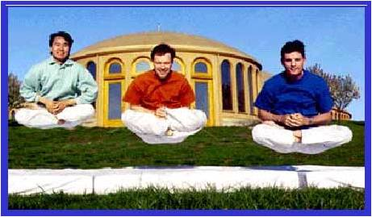
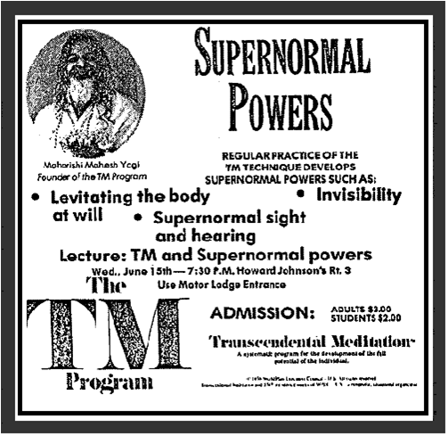

Reading, Writing, Transcendent Levitation
Friday 3 April, 2009: David Lynch’s press conference is poorly managed and uninformative but well-planned enough – it seems – to achieve its intended effect. The attending Press are either convinced, or confused and cowed – by the PowerPoint presentation of statistical graphs and PhD presented data.
Nobody seems capable of a sensible question by the end. For a full hour, a presentation designed to publicize Lynch’s plan to bring Transcendental Meditation [TM] to “one million children” in public schools across America failed to approach the question of how this ambitious plan would be executed, and nobody thought to ask.

The David Lynch Foundation website is a bit more helpful: “[The Foundation] provides funding for schools that offer children in grades 6 through 12 the opportunity to learn the Transcendental Meditation (TM) program as part of a whole school, twice-daily, morning and afternoon, Quiet Time session.” Further, “The David Lynch Foundation bears all TM instruction costs, TM instructor cost, and the cost of the follow-up program, which includes faculty and staff training in the proper supervision of the Quiet Time period.” But who are these instructors, and why Transcendental Meditation?
Yes – to the lady with her hand raised: “What got you into Transcendental Meditation, Mr. Lynch?”
The only question suggesting some background knowledge comes from a man in a black fedora with a thick German accent… He wants to know what role Advanced Techniques such as “Yogic Flight” will play in this schoolhouse transcendentalism. Lynch seems coached enough to avoid overtly supernatural claims, but not bright enough to conceal his TM mysticism. He launches into some unclear rhetoric about TM’s ability to “bring bliss to the atmosphere” and “peace to the Collective Consciousness”. Not only that, but in areas where TM is practiced, Lynch tells us, crime rates, and even car accident rates, have lowered!
But what about Yogic Flight? We know that TM had once claimed that its practitioners could develop the ability to levitate… they even marketed the school of TM with pictures of lotus-seated students apparently hovering above the ground. But first-hand observations of the “levitations” left many unconvinced. The levitators never managed to levitate for very long; they never really “hovered”. In fact, they sprung up rather abruptly and dropped immediately to the ground again. Really, it looked quite a lot as one might expect if credulous transcendent hopefuls were merely hopping about on their asses.
But levitation isn’t all! An old advertisement boldly states: “Regular practice of the TM technique develops SUPERNORMAL POWERS such as:
- Levitating the body at will
- Supernormal sight and hearing
- Invisibility
(While pictures of “levitating” TM students may have been falsified, I’ve have not heard the same said of any such pictures of those who were practicing invisibility.)
TM was founded by a man known as Maharishi Mahesh Yogi in 1956 in India, and has since grown worldwide. Its popularization was largely spurred by the endorsement of members of the Beatles. Paul McCartney and Ringo Starr are the first speakers at the press conference, stammering their way through a speech that they need not have mentioned was unprepared. TM is wonderful, is the gist of it. Oh, yes, and Ringo saw lepers in India when visiting Maharishi. Paul McCartney is just one of the performers scheduled to play at the next evening’s David Lynch Foundation benefit concert, raising money for the purpose of in-school Transcendentalism. Nothing is really said of the TM meditation technique. According to the Skeptic’s Dictionary online: “TM is said to bring the practitioner to a special state of consciousness often characterized as “enlightenment” or “bliss.” The method involves entertaining a mantra. Trainees pay hundreds of dollars for their mantras. Novices may be led to believe that their mantra is unique, though many practitioners will share the same mantra. As of April, 2007, the cost for TM training is $2,500. This is a one-time fee and financing is available.” (http://skepdic.com/tm.html) Though Lynch and his people are careful to stress that Transcendental Meditation is only a technique, it is quite clear that TM is an organization “which includes real estate holdings, schools, and clinics, […] worth more than $3 billion in the late 1990s.” (Brittanica: http://www.answers.com/topic/maharishi-mahesh-yogi).
Lynch’s goal of “one million children” seems reminiscent of another supernatural claim of TM, the Maharishi Effect: that a certain critical mass of TM meditators can affect change upon the material world.
“They’ve always maintained this,” James Randi (famed stage magician and arch-skeptic) explained to me later, “that if a certain critical number of people take up TM, they will protect everybody, and the world will be perfectly safe from then on.”
Randi came to be aware of TM through his friend and fellow magician, Doug Henning. “I knew [Henning] very well as a kid, and later as a mature magician. We were always in touch…” Randi describes a deeply cultic relationship between Henning and Transcendental Meditation that would destroy Henning’s career and eventually take his life. Henning’s career as a television magician was compromised as he strove to hire only TM initiates to work on the set. According to Randi, this was not only problematic for the fact that it was difficult to find people within TM who were talented in television production, but “every so often they went in to meditation and work just stopped…” Eventually, TV executives grew weary of Henning’s professional antics.
Henning became even more deeply involved with TM following his diagnosis of liver cancer, eventually removing himself from contact with non-TM practitioners. “He gave up all medical care… the Maharishi had told him that he could recover from his liver cancer simply from meditating… he meditated himself to death.” Henning died in February of 2000.

Therapist John Knapp, specializing in the treatment of individuals disentangling themselves from cult-type relationships, claims that he, too, had a cult-like experience with TM. After many years with TM, Knapp found himself far removed from friends and family outside of the organization. He began to harbour doubts about his relationship with TM, which caused for harassing behaviour from some its adherents. “I found that just raising various questions about the group caused me to be the recipient of extraordinarily painful language, and so forth…” Maharishi himself had once been accused of using “fear and intimidation” in order to work to prevent a disciple from leaving the Maharishi International University in Fairfield, Iowa. The disillusioned student, Robert Kropinski, and six other people sued Maharishi’s University for $9 million on the grounds of “fraud, neglect, and intentionally inflicting emotional damage”. Kropinski stated that none of the promised TM benefits ever surfaced during his time as a student, and he was awarded $138,000 by a Washington D.C. jury. Maharishi did not appear in court, as he was never available to receive summons.
It was John Knapp who, in response to the David Lynch Foundation’s proposition to introduce TM into public schools, organized a web seminar to draw attention the possible violation of the separation of Church and State such a program suggests. “They try to tell you there is nothing religious about it,” James Randi, who was scheduled to speak during the seminar, explains, “but that is absolute nonsense. Doug [Henning] told me the mantras and such are prayers to Hindu deities. That’s all there is to it.”
I received an email from Knapp inviting me to RSVP to the event, after which I tried to help him generate publicity. But the event was never to be. The night before the seminar, William Goldstein, General Counsel for The David Lynch Foundation, sent Knapp an email strongly advising caution: “we intend to review the global web presentation for any false, defamatory, tortious, breachful, malicious or otherwise unlawful statements or materials made or published by you or the presenters.” Goldstein then went on to dissect sentences lifted from the Knapp Family Counseling website that he seemed to feel fit the criteria above, though he never answered the thrust of the charge: that teaching TM in schools is a violation of the First Amendment’s Establishment Clause. The next morning, Knapp cancelled the panel discussion. In an email to all registered attendants he explained: “Upon reflection, I could not in good conscience expose my co-panelists to possible legal entanglements. With regret, I have canceled this Web Event. The fight to overcome what I believe is a clear Church/State violation — teaching the religiously based Transcendental Meditation program in public schools — goes on.” I, too, believe the Church/State issue is a serious concern, and I feel that TM’s meditation practices planned introduction into schools is no different from a proposition that one-on-one therapy sessions be introduced in the form of Dianetics auditing as practiced within the cult of Scientology.
James Randi’s case against TM is far more personal, “I’m so angry at the TM movement for having taken an innocent person.”
Knapp’s opinion, as he explained to me the day after the seminar was to take place, is that any critical scrutiny of TM will prove its undoing. “…It’s just too damn strange.”
(Following is the email from Bill Goldstein, General Counsel for the David Lynch Foundation for Consciousness Based Education and World Peace, sent to John Knapp the night before the web seminar was to take place. The email is posted here in its original formatting)
From: bill goldstein <bgoldstein108@yahoo.com>
Date: Tue, Mar 31, 2009 at 10:34 PM
Subject: Web Event
To: “Mr. John Knapp” <jmknapp53@gmail.com>
Dear Mr. Knapp:
I am General Counsel for the David Lynch Foundation for Consciousness Based Education and World Peace. I have been forwarded the url which publicizes a web event which it appears you are hosting on April 2nd entitled: Tell TM hands off our schools, http://knappfamilycounseling.com/tmconcert.html .
Your website is a fount of false, misleading, biased and entirely negative information on the TM program and the organizations and individuals which teach or have conducted research on that program[1]. The listed presenters at your event appear all to have a similar negative mission. Therefore, I wished to give you the courtesy of an advisal that we intend to review the global web presentation of the event carefully for any false, defamatory, tortious, breachful, malicious or otherwise unlawful statements or materials made or published by you or the presenters.
I would caution you and your presenters, therefore, to be most prudent concerning the truthfulness and propriety of any statements made by any of them at your web event or thereafter. As you have intentionally scheduled this event two days prior to the Foundation’s benefit concert at Radio City Music Hall it is clear you have planned it to have a negative impact on that event. Please know that you and your presenters will be held responsible for injury to any individuals or organizations, or their reputations, that may result from any unlawful behavior under US, UK and/or foreign law.
You will also be held responsible for the continuing publication of falsehoods on your websites and otherwise.
I trust you will act appropriately now after having been so clearly advised.
Very truly,
William Goldstein
General Counsel
David Lynch Foundation for Consciousness Based Education and World Peace
[1]- For example, by way of illustration and in no way attempting to be exhaustive, you state: I think there is evidence that [the TM program] is either not effective, not enjoyable, or downright dangerous for a certain percentage of the population, on the order of 10% to 20%.” http://knappfamilycounseling.com/mostly.html. And as evidence you link to another website of yours http://trancenet.net/research/index.shtml with extensive false and misleading statements and citations. You start by including therein a characterization of “ the German High Court’s 1989 ruling that TM is a destructive cult — overruling all lower court findings. The current law of the land in Germany.” The facts of the case are 180 degrees removed from that statement, as you should well know, and are laid out in http://www.truthabouttm.org/truth/LegalIssues/GermanCourtCases/index.cfm.
You go on to state that according to one of your presenters, Barry Markovsky, “TM researchers” research is not designed to be sensitive to, and contains no indicators for, negative effects. In fact, all the 600 studies on the TM technique could potentially show negative effects (e.g., they could measure an increased anxiety instead of decreased or no change in anxiety; an increase in war-related variables instead of decreased or no change in war).
The next false statement is “Negative effects are not detected in TM research because they are infrequent, and therefore will wash out in a statistical analysis”. The fact is that all the major clinical studies had in place mechanisms for reporting adverse effects. No adverse effects have been reported from these studies, even though the data were collected in universities not connected with any TM affiliated university or organization, and the data collection personnel and attending medical personnel were blind to the group assignment. Moreover, case histories on individuals at risk or with pre-existing conditions, such as mental health patients, do not support that the TM program has adverse effects. This allegation is baseless. For details responding in detail to all the claimed “studies” to the contrary you can see, as you already certainly have: http://www.truthabouttm.org/truth/IndividualEffects/DoesTMDoAnyHarm/index.cfm#Harmful.
And then you go on to misrepresent that “Most of the research has been paid for and conducted by individuals committed to TM” .The fact is that the research on the TM technique has been conducted at over 200 independent universities and research institutions around the world. The National Institutes of Health have funded 0ver $20 million for clinical research on the TM technique, which has been conducted at independent universities.
Some of the Universities Conducting NIH-funded research on Transcendental Meditation
University of Pennsylvania
Effectiveness of Transcendental Meditation on Functional Capacity and Quality of Life of African Americans with Congestive Heart Failure
Published in Ethnicity and Disease, Winter 2007 Full Article
Cedars-Sinai Hospital , Los Angeles
The effects of Transcendental Meditation on cardiovascular disease in coronary heart disease patients with metabolic syndrome
Published in the American Medical Association’s Archives of Internal Medicine, July 2006 Full Article
University of California , Irvine
The effects of Transcendental Meditation on brain functioning, stress, and pain as shown by magnetic resonance imaging (MRI)
Published in NeuroReport, August 2006 Full Article
Howard University School of Medicine, Washington , D.C.
Morehouse School of Medicine , Atlanta
The effects of Transcendental Meditation in older African American women at risk for heart disease
Findings presented at the annual meeting of the American College of Cardiology, March 2006
University of Iowa
The effects of the multimodality approach of the TM technique and Ayurvedic herbal preparations on coronary disease
Findings presented at the annual meeting of the American College of Cardiology, March 2006
The Medical College of Wisconsin , Milwaukee
(1) A study on the effects of Transcendental Meditation on the prevention of hypertension in African Americans; and
(2) A study on the effects of Transcendental Meditation on morbidity and mortality in African Americans with heart disease.
Charles R. Drew University of Medicine and Science, Los Angeles
(1) A study on the mechanisms of atherosclerosis—the effects of Transcendental Meditation on the sympathetic nervous system and the functioning of the arterial endothelium in African Americans; and
(2) The effects of Transcendental Meditation on carotid atherosclerosis.
Published in the American Heart Association’s Stroke, March 2000 Full Article

Marked as: Abnormal Sociology • Belief Systems • Bunco • Societal Policies — 1 comment (RSS)
Leave a Comment
If you would like to make a comment, please fill out the form below.
You must be logged in to post a comment.
i dunno – sounds like what lynch was asking (“advising”) for is more than reasonable – don’t make false defamatory statements (several of which had apparently already been made on knapp’s website were then pretty clearly documented)
if they couldn’t have had a press conference without making false statements (defamatory or otherwise), then of course they shouldn’t have had the conference – though too bad they couldn’t actually be honest and careful about their criticism – it might have been interesting to hear what they had to say (if it could have been truthful)